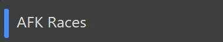
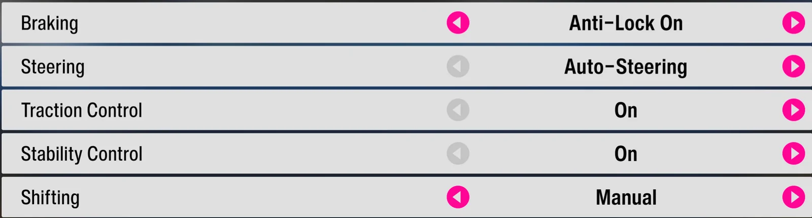
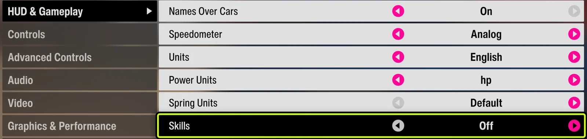
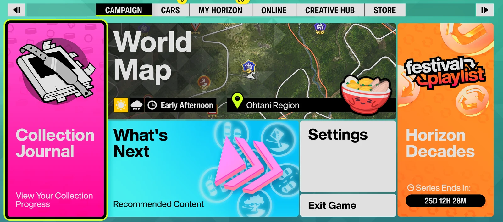
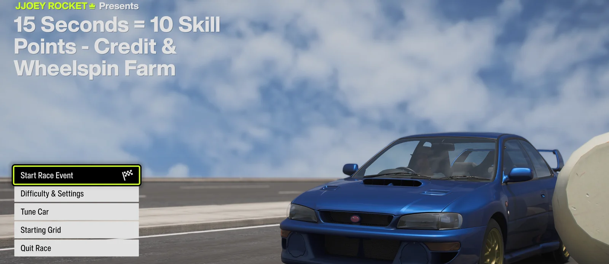

AFK Races
Open AFK Races
Click 🏁 AFK Races in the sidebar. Templates are built in — nothing to capture.

Prepare your car, difficulty and HUD
Use a fully upgraded Subaru Impreza 22B-STI with its stock paint job. In Difficulty, set Steering to Auto Steering, Traction Control to On, and Stability Control to On. Set the transmission to Manual or Automatic according to the EventLab map's requirement.
Then open Settings → HUD and Gameplay and set Skill to Off.


Get to the Start Race screen (or stay on the main menu)
Either stop on the Start Race screen yourself, or just stay on the main menu — FAFE auto-navigates via Creative Hub → EventLab to your last-played event and into the start screen. Use blueprint share code 362 177 064 (or any course you can finish by holding W). FAFE detects which screen you're on and takes over; just don't let the race begin yet.


Press Start
In FAFE, click ▶ Start or press F9. A 3-second countdown begins. With background mode enabled, FAFE controls the game window directly, so you do not need to switch back to FH6.
Let it run
The tool detects race start, holds W throughout, detects the finish, and restarts automatically — looping forever.
Stop
Press F9 or click ■ Stop at any time to stop immediately — this works mid-race too, while it's holding W.